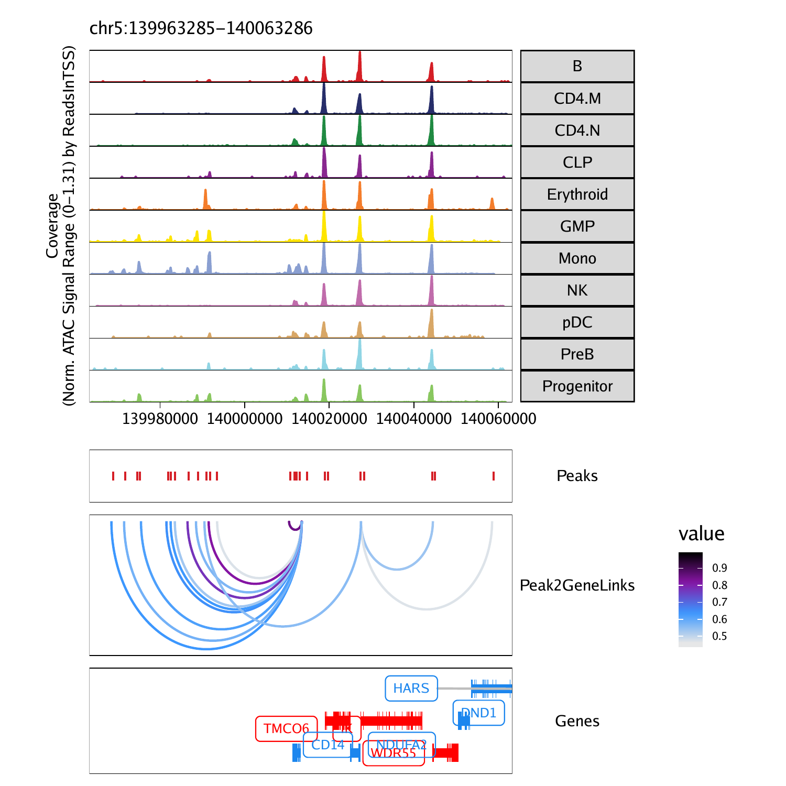
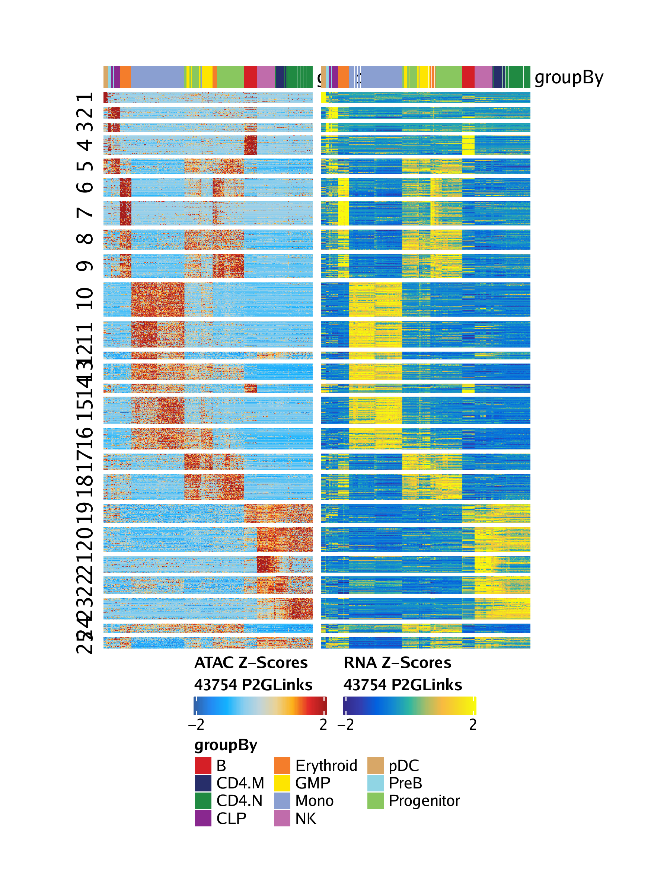

15.3 Peak2GeneLinkage with ArchR
Similar to co-accessibility, ArchR can also identify so-called “peak-to-gene links”. The primary differences between peak-to-gene links and co-accessibility is that co-accessibility is an ATAC-seq-only analysis that looks for correlations in accessibility between two peaks while peak-to-gene linkage leverages integrated scRNA-seq data to look for correlations between peak accessibility and gene expression. These represent orthogonal approaches to a similar problem. However, because peak-to-gene linkage correlates scATAC-seq and scRNA-seq data, we often think of these links as more relevant to gene regulatory interactions.
To identify peak-to-gene links in ArchR, we use the addPeak2GeneLinks() function.
## ArchR logging to : ArchRLogs/ArchR-addPeak2GeneLinks-11a7017ae41d-Date-2020-04-15_Time-11-57-10.log
## If there is an issue, please report to github with logFile!
## 2020-04-15 11:57:11 : Getting Available Matrices, 0.006 mins elapsed.
## 2020-04-15 11:57:11 : Filtered Low Prediction Score Cells (1049 of 10251, 0.102), 0.004 mins elapsed.
## 2020-04-15 11:57:12 : Computing KNN, 0.009 mins elapsed.
## 2020-04-15 11:57:12 : Identifying Non-Overlapping KNN pairs, 0.016 mins elapsed.
## 2020-04-15 11:57:15 : Identified 491 Groupings!, 0.07 mins elapsed.
## 2020-04-15 11:57:15 : Getting Group RNA Matrix, 0.071 mins elapsed.
## 2020-04-15 11:57:43 : Getting Group ATAC Matrix, 0.536 mins elapsed.
## 2020-04-15 11:58:18 : Normalizing Group Matrices, 1.112 mins elapsed.
## 2020-04-15 11:58:24 : Finding Peak Gene Pairings, 1.218 mins elapsed.
## 2020-04-15 11:58:25 : Computing Correlations, 1.227 mins elapsed.
## 2020-04-15 11:58:34 : Completed Peak2Gene Correlations!, 1.382 mins elapsed.
## ArchR logging successful to : ArchRLogs/ArchR-addPeak2GeneLinks-11a7017ae41d-Date-2020-04-15_Time-11-57-10.log
We can then retrieve these peak-to-gene links in a similar fashion to how we retrieved co-accessibility interactions by using the getPeak2GeneLinks() function. As we saw previously, this function allows for a user-specified cutoff for correlation and resolution for linkages.
p2g <- getPeak2GeneLinks(
ArchRProj = projHeme5,
corCutOff = 0.45,
resolution = 1,
returnLoops = FALSE
)When returnLoops is set to false, this function returns a DataFrame object anaolgous to the DataFrame object returned by getCoAccessibility(). The primary difference is that the indexes for the scATAC-seq peaks are stored in the idxATAC column and the indexes for the scRNA-seq gene are stored in the idxRNA column.
## DataFrame with 43754 rows and 6 columns
## idxATAC idxRNA Correlation FDR
##
## 1 47 5 0.549552663393716 1.34094093110629e-38
## 2 3 6 0.487418258348982 2.1460798658766e-29
## 3 3 7 0.821369314290254 1.70141157082175e-118
## 4 47 7 0.569899085935183 4.61958766180263e-42
## 5 59 7 0.549954043409585 1.15152278593831e-38
## … … … … …
## 43750 143964 18590 0.520703047216992 4.37554114264876e-34
## 43751 143977 18590 0.546301068655939 4.54936701954597e-38
## 43752 144004 18594 0.47934214168793 2.47516776950818e-28
## 43753 143999 18598 0.49092225993235 7.28579053551407e-30
## 43754 144005 18598 0.493389088498317 3.37643947034054e-30
## VarQATAC VarQRNA
##
## 1 0.948753202924817 0.793290683296597
## 2 0.253206396822421 0.445890005913661
## 3 0.253206396822421 0.42728885543788
## 4 0.948753202924817 0.42728885543788
## 5 0.916137185870328 0.42728885543788
## … … …
## 43750 0.629044018082203 0.960701037578625
## 43751 0.701518655084057 0.960701037578625
## 43752 0.814587977140318 0.802537497983979
## 43753 0.0392197709865356 0.901295629267244
## 43754 0.158948399058392 0.901295629267244
This peak-to-gene linkage DataFrame also has a metadata component containing a GRanges object of the relevant peaks. The indexes of idxATAC mentioned above apply to this GRanges object.
## GRanges object with 144009 ranges and 0 metadata columns: ## seqnames ranges strand
##
## [1] chr1 752499-752999 *
## [2] chr1 762651-763151 *
## [3] chr1 801006-801506 *
## [4] chr1 805039-805539 *
## [5] chr1 845325-845825 *
## … … … …
## [144005] chrX 154664540-154665040 *
## [144006] chrX 154807324-154807824 *
## [144007] chrX 154840785-154841285 *
## [144008] chrX 154842404-154842904 *
## [144009] chrX 154862017-154862517 *
## ——-
## seqinfo: 23 sequences from an unspecified genome; no seqlengths
If we set returnLoops = TRUE, then getPeak2GeneLinks() will return a loop track GRanges object that connects the peak and gene. As for co-accessibility, the start and end of the IRanges object represent the position of the peak and gene being linked. When resolution = 1, this links the center of the peak to the single-base TSS of the gene.
p2g <- getPeak2GeneLinks(
ArchRProj = projHeme5,
corCutOff = 0.45,
resolution = 1,
returnLoops = TRUE
)
p2g[[1]]## GRanges object with 43695 ranges and 2 metadata columns: ## seqnames ranges strand | value
##|
## [1] chr1 762901-948847 * | 0.533350285896763
## [2] chr1 801256-895967 * | 0.487418258348982
## [3] chr1 801256-901877 * | 0.821369314290254
## [4] chr1 852367-955503 * | 0.487693663181145
## [5] chr1 894679-968584 * | 0.549552663393716
## … … … … . …
## [43691] chrX 153962451-153979858 * | 0.453720046871409
## [43692] chrX 153980218-153991031 * | 0.546301068655939
## [43693] chrX 154255064-154493795 * | 0.47934214168793
## [43694] chrX 154356425-154444701 * | 0.49092225993235
## [43695] chrX 154444701-154664790 * | 0.493389088498317
## FDR
##
## [1] 5.20045729958651e-36
## [2] 2.1460798658766e-29
## [3] 1.70141157082175e-118
## [4] 1.97244775926907e-29
## [5] 1.34094093110629e-38
## … …
## [43691] 3.78754241443136e-25
## [43692] 4.54936701954597e-38
## [43693] 2.47516776950818e-28
## [43694] 7.28579053551407e-30
## [43695] 3.37643947034054e-30
## ——-
## seqinfo: 23 sequences from an unspecified genome; no seqlengths
We can alternatively decrease the resolution of these links by setting resolution = 1000. This is primarily useful for plotting the links as a browser tracks because there are instances where many nearby peaks all link to the same gene and this can be difficult to visualize.
p2g <- getPeak2GeneLinks(
ArchRProj = projHeme5,
corCutOff = 0.45,
resolution = 1000,
returnLoops = TRUE
)
p2g[[1]]## GRanges object with 42126 ranges and 2 metadata columns:
## seqnames ranges strand | value
##|
## [1] chr1 762500-948500 * | 0.533350285896763
## [2] chr1 801500-895500 * | 0.487418258348982
## [3] chr1 801500-901500 * | 0.821369314290254
## [4] chr1 852500-955500 * | 0.487693663181145
## [5] chr1 894500-968500 * | 0.549552663393716
## … … … … . …
## [42122] chrX 153962500-153979500 * | 0.453720046871409
## [42123] chrX 153980500-153991500 * | 0.546301068655939
## [42124] chrX 154255500-154493500 * | 0.47934214168793
## [42125] chrX 154356500-154444500 * | 0.49092225993235
## [42126] chrX 154444500-154664500 * | 0.493389088498317
## FDR
##
## [1] 5.20045729958651e-36
## [2] 2.1460798658766e-29
## [3] 1.70141157082175e-118
## [4] 1.97244775926907e-29
## [5] 1.34094093110629e-38
## … …
## [42122] 3.78754241443136e-25
## [42123] 4.54936701954597e-38
## [42124] 2.47516776950818e-28
## [42125] 7.28579053551407e-30
## [42126] 3.37643947034054e-30
## ——-
## seqinfo: 23 sequences from an unspecified genome; no seqlengths
Decreasing the resolution even further also decreases the total number of peak-to-gene links identified.
p2g <- getPeak2GeneLinks(
ArchRProj = projHeme5,
corCutOff = 0.45,
resolution = 10000,
returnLoops = TRUE
)
p2g[[1]]## GRanges object with 33645 ranges and 2 metadata columns:
## seqnames ranges strand | value
##|
## [1] chr1 765000-945000 * | 0.533350285896763
## [2] chr1 805000-895000 * | 0.487418258348982
## [3] chr1 805000-905000 * | 0.821369314290254
## [4] chr1 855000-955000 * | 0.487693663181145
## [5] chr1 895000-965000 * | 0.549552663393716
## … … … … . …
## [33641] chrX 153965000-153975000 * | 0.453720046871409
## [33642] chrX 153985000-153995000 * | 0.546301068655939
## [33643] chrX 154255000-154495000 * | 0.47934214168793
## [33644] chrX 154355000-154445000 * | 0.49092225993235
## [33645] chrX 154445000-154665000 * | 0.493389088498317
## FDR
##
## [1] 5.20045729958651e-36
## [2] 2.1460798658766e-29
## [3] 1.70141157082175e-118
## [4] 1.97244775926907e-29
## [5] 1.34094093110629e-38
## … …
## [33641] 3.78754241443136e-25
## [33642] 4.54936701954597e-38
## [33643] 2.47516776950818e-28
## [33644] 7.28579053551407e-30
## [33645] 3.37643947034054e-30
## ——-
## seqinfo: 23 sequences from an unspecified genome; no seqlengths
15.3.1 Plotting browser tracks with peak-to-gene links
To plot these peak-to-gene links as a browser track, we use the same workflow shown for co-accessibility in the previous section. Here we use the plotBrowserTrack() function
markerGenes <- c(
"CD34", #Early Progenitor
"GATA1", #Erythroid
"PAX5", "MS4A1", #B-Cell Trajectory
"CD14", #Monocytes
"CD3D", "CD8A", "TBX21", "IL7R" #TCells
)
p <- plotBrowserTrack(
ArchRProj = projHeme5,
groupBy = "Clusters2",
geneSymbol = markerGenes,
upstream = 50000,
downstream = 50000,
loops = getPeak2GeneLinks(projHeme5)
)## ArchR logging to : ArchRLogs/ArchR-plotBrowserTrack-11a7048fa912a-Date-2020-04-15_Time-11-58-35.log
## If there is an issue, please report to github with logFile!
## 2020-04-15 11:58:36 : Validating Region, 0.012 mins elapsed.
## GRanges object with 9 ranges and 2 metadata columns:
## seqnames ranges strand | gene_id symbol
##|
## [1] chr1 208059883-208084683 - | 947 CD34
## [2] chrX 48644982-48652717 + | 2623 GATA1
## [3] chr9 36838531-37034476 - | 5079 PAX5
## [4] chr11 60223282-60238225 + | 931 MS4A1
## [5] chr5 140011313-140013286 - | 929 CD14
## [6] chr11 118209789-118213459 - | 915 CD3D
## [7] chr2 87011728-87035519 - | 925 CD8A
## [8] chr17 45810610-45823485 + | 30009 TBX21
## [9] chr5 35856977-35879705 + | 3575 IL7R
## ——-
## seqinfo: 24 sequences from hg19 genome
## 2020-04-15 11:58:36 : Adding Bulk Tracks (1 of 9), 0.015 mins elapsed.
## 2020-04-15 11:58:37 : Adding Feature Tracks (1 of 9), 0.038 mins elapsed.
## 2020-04-15 11:58:37 : Adding Loop Tracks (1 of 9), 0.039 mins elapsed.
## 2020-04-15 11:58:37 : Adding Gene Tracks (1 of 9), 0.041 mins elapsed.
## 2020-04-15 11:58:38 : Plotting, 0.045 mins elapsed.
## 2020-04-15 11:58:39 : Adding Bulk Tracks (2 of 9), 0.076 mins elapsed.
## 2020-04-15 11:58:40 : Adding Feature Tracks (2 of 9), 0.091 mins elapsed.
## 2020-04-15 11:58:41 : Adding Loop Tracks (2 of 9), 0.095 mins elapsed.
## 2020-04-15 11:58:41 : Adding Gene Tracks (2 of 9), 0.098 mins elapsed.
## 2020-04-15 11:58:41 : Plotting, 0.104 mins elapsed.
## 2020-04-15 11:58:43 : Adding Bulk Tracks (3 of 9), 0.134 mins elapsed.
## 2020-04-15 11:58:44 : Adding Feature Tracks (3 of 9), 0.151 mins elapsed.
## 2020-04-15 11:58:44 : Adding Loop Tracks (3 of 9), 0.153 mins elapsed.
## 2020-04-15 11:58:44 : Adding Gene Tracks (3 of 9), 0.157 mins elapsed.
## 2020-04-15 11:58:45 : Plotting, 0.162 mins elapsed.
## 2020-04-15 11:58:47 : Adding Bulk Tracks (4 of 9), 0.196 mins elapsed.
## 2020-04-15 11:58:48 : Adding Feature Tracks (4 of 9), 0.212 mins elapsed.
## 2020-04-15 11:58:48 : Adding Loop Tracks (4 of 9), 0.213 mins elapsed.
## 2020-04-15 11:58:48 : Adding Gene Tracks (4 of 9), 0.216 mins elapsed.
## 2020-04-15 11:58:48 : Plotting, 0.22 mins elapsed.
## 2020-04-15 11:58:49 : Adding Bulk Tracks (5 of 9), 0.242 mins elapsed.
## 2020-04-15 11:58:50 : Adding Feature Tracks (5 of 9), 0.258 mins elapsed.
## 2020-04-15 11:58:51 : Adding Loop Tracks (5 of 9), 0.26 mins elapsed.
## 2020-04-15 11:58:51 : Adding Gene Tracks (5 of 9), 0.268 mins elapsed.
## 2020-04-15 11:58:51 : Plotting, 0.273 mins elapsed.
## 2020-04-15 11:58:53 : Adding Bulk Tracks (6 of 9), 0.307 mins elapsed.
## 2020-04-15 11:58:54 : Adding Feature Tracks (6 of 9), 0.323 mins elapsed.
## 2020-04-15 11:58:54 : Adding Loop Tracks (6 of 9), 0.325 mins elapsed.
## 2020-04-15 11:58:55 : Adding Gene Tracks (6 of 9), 0.333 mins elapsed.
## 2020-04-15 11:58:55 : Plotting, 0.338 mins elapsed.
## 2020-04-15 11:58:57 : Adding Bulk Tracks (7 of 9), 0.369 mins elapsed.
## 2020-04-15 11:58:58 : Adding Feature Tracks (7 of 9), 0.389 mins elapsed.
## 2020-04-15 11:58:58 : Adding Loop Tracks (7 of 9), 0.391 mins elapsed.
## 2020-04-15 11:58:59 : Adding Gene Tracks (7 of 9), 0.397 mins elapsed.
## 2020-04-15 11:58:59 : Plotting, 0.403 mins elapsed.
## 2020-04-15 11:59:01 : Adding Bulk Tracks (8 of 9), 0.443 mins elapsed.
## 2020-04-15 11:59:03 : Adding Feature Tracks (8 of 9), 0.462 mins elapsed.
## 2020-04-15 11:59:03 : Adding Loop Tracks (8 of 9), 0.464 mins elapsed.
## 2020-04-15 11:59:03 : Adding Gene Tracks (8 of 9), 0.468 mins elapsed.
## 2020-04-15 11:59:03 : Plotting, 0.473 mins elapsed.
## 2020-04-15 11:59:06 : Adding Bulk Tracks (9 of 9), 0.515 mins elapsed.
## 2020-04-15 11:59:07 : Adding Feature Tracks (9 of 9), 0.533 mins elapsed.
## 2020-04-15 11:59:07 : Adding Loop Tracks (9 of 9), 0.536 mins elapsed.
## 2020-04-15 11:59:07 : Adding Gene Tracks (9 of 9), 0.543 mins elapsed.
## 2020-04-15 11:59:08 : Plotting, 0.549 mins elapsed.
## ArchR logging successful to : ArchRLogs/ArchR-plotBrowserTrack-11a7048fa912a-Date-2020-04-15_Time-11-58-35.log
To plot our browser track we use the grid.draw function and select a specific marker gene by name using the $ accessor.

To save an editable vectorized version of this plot, we use plotPDF().
plotPDF(plotList = p,
name = "Plot-Tracks-Marker-Genes-with-Peak2GeneLinks.pdf",
ArchRProj = projHeme5,
addDOC = FALSE, width = 5, height = 5)## NULL
## NULL
## NULL
## NULL
## NULL
## NULL
## NULL
## NULL
## NULL
## [1] 0
15.3.2 Plotting a heatmap of peak-to-gene links
To visualize the correspondence of all of our peak-to-gene links, we can plot a peak-to-gene heatmap which contains two side-by-side heatmaps, one for our scATAC-seq data and one for our scRNA-seq data. To do this, we use the plotPeak2GeneHeatmap()
## ArchR logging to : ArchRLogs/ArchR-plotPeak2GeneHeatmap-11a707e40d64f-Date-2020-04-15_Time-11-59-30.log
## If there is an issue, please report to github with logFile!
## 2020-04-15 11:59:34 : Determining KNN Groups!, 0.071 mins elapsed.
## 2020-04-15 11:59:39 : Ordering Peak2Gene Links!, 0.15 mins elapsed.
## 2020-04-15 11:59:48 : Constructing ATAC Heatmap!, 0.309 mins elapsed.
## Adding Annotations..
## Preparing Main Heatmap..
## 2020-04-15 11:59:49 : Constructing RNA Heatmap!, 0.32 mins elapsed.
## Adding Annotations..
## Preparing Main Heatmap..
## ArchR logging successful to : ArchRLogs/ArchR-plotPeak2GeneHeatmap-11a707e40d64f-Date-2020-04-15_Time-11-59-30.log
The heatmap rows are clustered using k-means clustering based on the value passed to the parameter k, which defaults to 25 as shown below.
